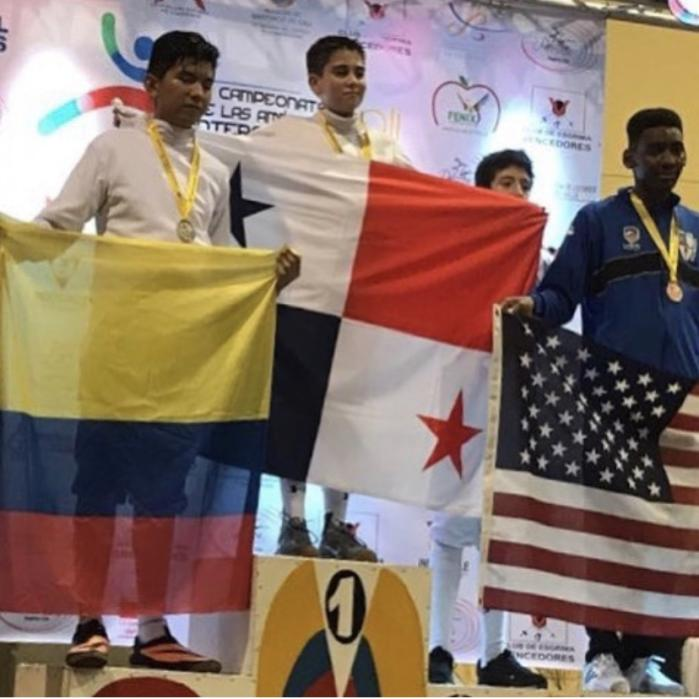
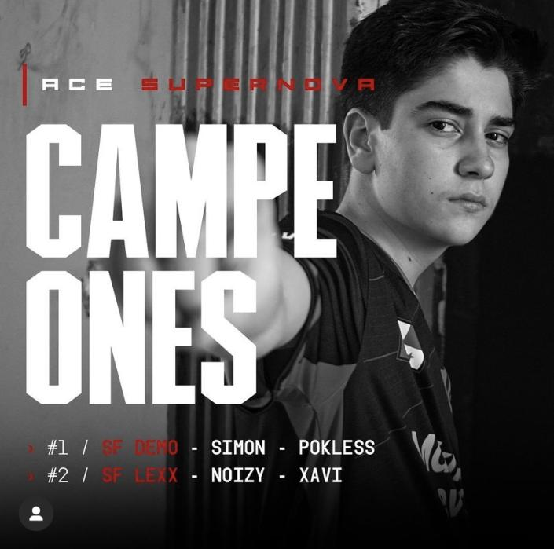

From the age of 12 to 16, I was heavily involved in fencing. I was able to become the Panamanian national champion in the Y14 and Cadet division, and then went on to win the Pan American championship in Colombia. This was a short-lived but successful career in fencing for me.
From the age of 16 to 18, I played Fortnite professionally and was able to become the Panamanian national champion. I also ranked in the top 100 for the North American region. My achievements in both of these hobbies have been recognized and I have been published in newspapers and gained popularity.
In March 2022, I found my new passion in weightlifting and going to the gym. I also manage my own company, which keeps me busy.